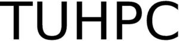

Trade Mark Journal No.2025/038 19 September 2025
WO0000001874419 (17)
Office of origin: Italy
Date of International Registration:30 May 2025
Date of designation in the UK:
30 May 2025

International priority date claimed: 9 May 2025
(Italy)
(302025000076143)
- Class 17
- Hoses made of rubber; hoses made of plastic; cylinder jointings; junctions, not of metal, for pipes; pipe muffs, not of metal; fittings, not of metal, for compressed air lines; plastic substances, semi- processed; reinforcing materials, not of metal, for pipes; valves of india-rubber or vulcanized fibre; unprocessed and semi-processed rubber, gutta- percha, gum, asbestos, mica and substitutes for all these materials; plastics and resins in extruded form for use in manufacture; packing, stopping and insulating materials; flexible pipes, tubes and hoses, not of metal; PTFE hoses [also electrically conductive], not of metal, with stainless steel braid; PTFE hoses [also electrically conductive], not of metal, with stainless steel braid and elastomer outer; flexible tubes of rubber; flexible tubes of plastic; non- conducting materials for retaining heat; air hoses, not of metal; irrigation hoses; hoses of rubber for agricultural purposes; hoses of plastic for agricultural purposes; canvas hose pipes; pipe joint tape; watering hoses; pipe gaskets; non-metal sealant compounds for joints; balata; caulking materials; fiberglass for insulation; floating anti-pollution barriers; gaskets; lute; rubber solutions; slag wool [insulator]; synthetic resins [semi-finished products]; water-tight rings; weatherstripping compositions; acrylic resins [semi-finished products]; brake lining materials, partly processed; carbon fibers [fibres], other than for textile use; cellulose acetate, semi- processed; clutch linings; vulcanized fiber; foam supports for flower arrangements [semi-finished products]; plastic sheeting for agricultural purposes; hydraulic hoses of plastic; fittings, not of metal, for hoses; fittings, not of metal, for pipes; non- metal pipe couplings and joints; thermoplastic heat shrinkable tubing for managing electric cables; elbows, not of metal, for pipes.
TUBIGOMMA DEREGIBUS S.r.l.
Representative: Dr. Modiano & Associati SpA, Via Meravigli, 16, I-20123 Milano, ITALY